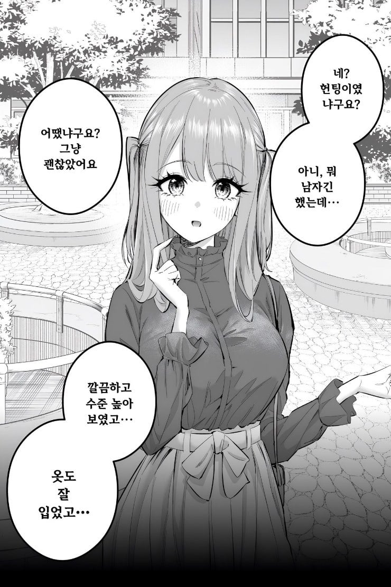
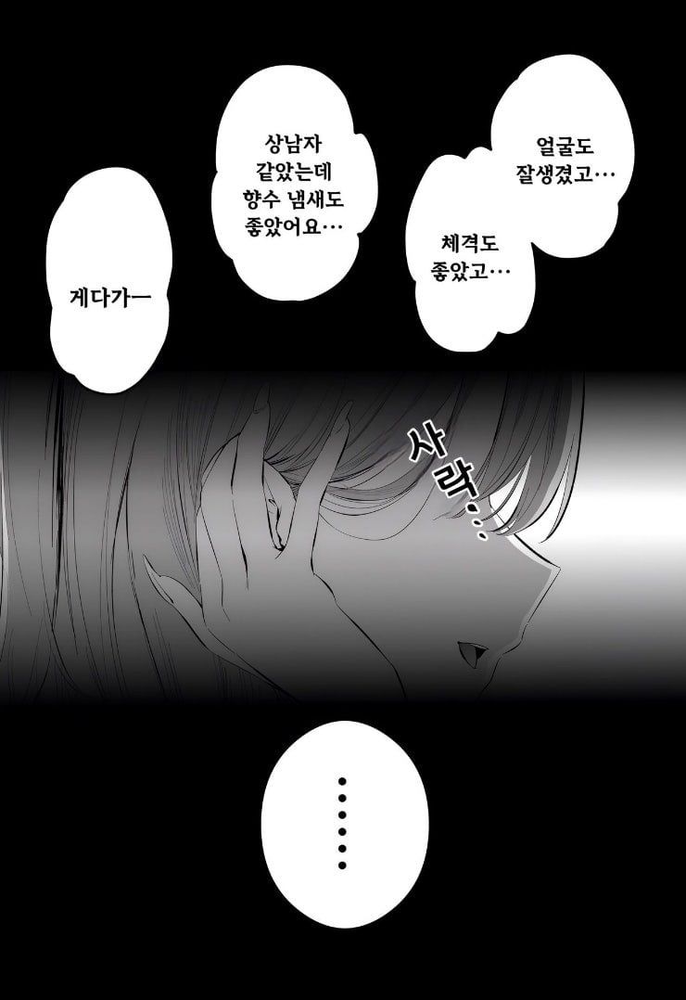
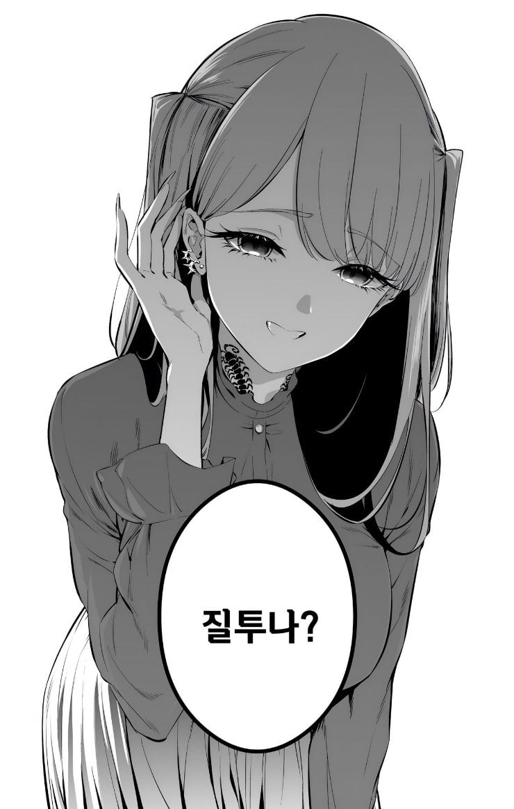

목에 지네 타투

사갈가튼련
지네문신은 시발 미친년이잖아 저리꺼져
(35.5445,128.4922)-"ㅇ"
살다살다 문신 지네는 처음보네

목에 뭐야 시발
정수리까지 거미문신한 영국 할배 생각나네
지네 문신은 물리면 좆된다는 걸 암시하는 건가
피부 비처녀
질투유발 수준이 아니라 정조의 문제인거같은데 이정도면 ㅋㅋ
그을레가튼년 어장이 미친듯이 넓겠네
뭐야 평범한 호주잖아
아이 씨발 창년이
인증서 목에박혀있고 다리 많은 지네 타투인거보니 걸레네
씨발련이